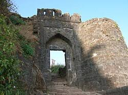
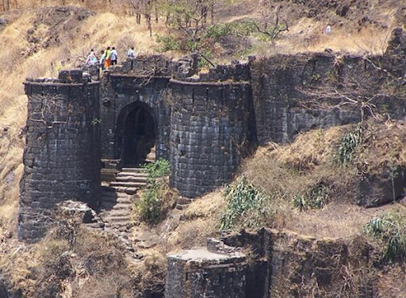
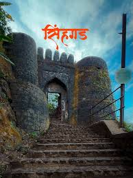

सिंहगड हा किल्ला पूर्वी आदिलशाहीच्या ताब्यात होता. दादोजी कोंडदेव हे विजापूरकर (आदिलशाही) सुभेदार होते. इ.स. १६४७ मध्ये दादोजी कोंडदेवांच्या निधनानंतर, कोंडाण्यावरील किल्लेदार सिद्दी अंबर याला लाच देऊन शिवाजी महाराजांनी हा किल्ला स्वराज्यात आणला आणि त्यावर आपले लष्करी केंद्र बनवले. पुढे इ.स. १६४९ मध्ये, शहाजीराजांची सुटका करण्यासाठी, शिवाजी महाराजांनी पुरंदरच्या तहात मोगलांना दिलेला सिंहगड किल्ला आदिलशहाला परत केला. मोगलांकडून उदेभान राठोड हा कोंढाण्याचा अधिकारी होता. तो मूळचा राजपूत होता, पण तो धर्मांतरित होऊन मुसलमान झाला होता.इ.स. १३६० मध्ये दिल्लीचा सुलतान मुहम्मद तुघलकाने दक्षिण स्वारी केली. तेव्हा त्याला मंगोल आक्रमणापासून सुरक्षित राहण्यासाठी राजधानी देवगिरी येथे हलवली पण त्यावेळी दक्खनच्या भागात कोळी राजांचे वर्चस्व होते. म्हणून त्याने कोळी साम्राज्यवर आक्रमण केले. त्यावेळी त्याच्यात आणि स्थानिक महादेव कोळी राजा नागनायक यांच्यात मोठे युद्ध झाले. पुढे जनतेला घेऊन त्यांनी किल्ल्यात आश्रय केला. त्यांनी तब्ब्ल 9 महिन्यपेक्षा अधिक काळ म्हणजे एक वर्ष किल्ला लढवला. त्यांच्या पराक्रम पाहून सुलतान चकित झाला. असे सुलतानशाही बखरीत याचे वर्णन आहे. पुढे रसद तुटल्यामुळे त्यांनी किल्ला सोडून दिला. सुलतान दिल्लीला गेल्यावर किल्ला पुन्हा घेतला. पुढे निझामशाहीपर्यंत किल्ला महादेव कोळी सामंताकडे होता.
